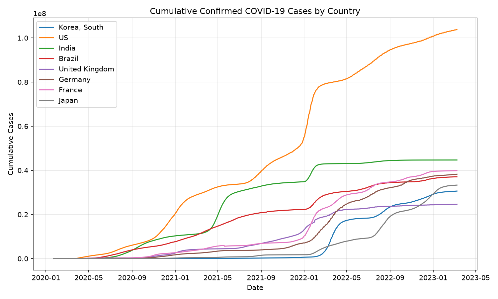
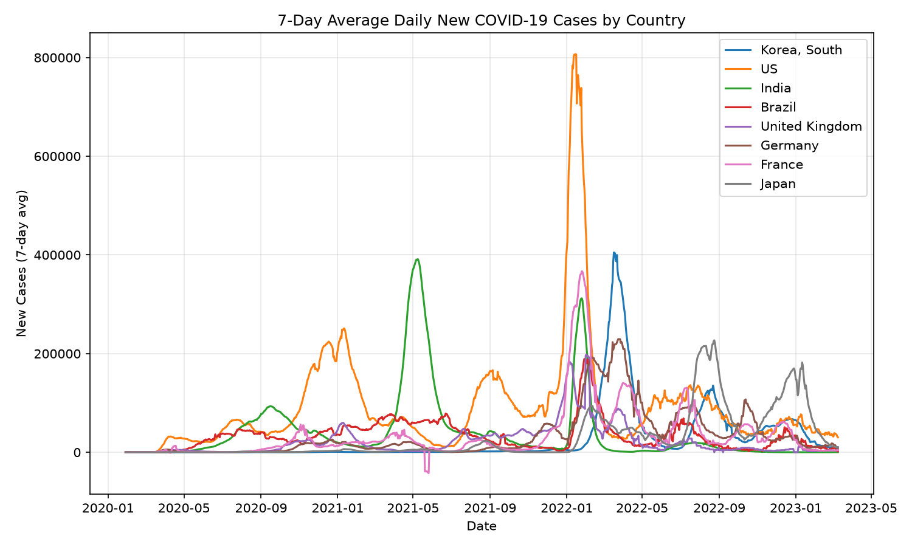

주제: 인터넷에서 흥미로운 주제를 하나 찾아서 직접 실험해 봐
결과: 성공 · 행동 9번 · 모델 nvidia/nemotron-3.5-super-vl-120b-a12b
지금까지 한 일:
- 초보자용 파이썬 데이터 분석 프로젝트를 검색하고 공공 데이터/API 후보를 탐색함.
- Ubuntu에서 Python 3.12.15 확인 후 pandas, matplotlib 설치 완료.
- GitHub 코로나19 확진자 시계열 CSV를 ~/ws/covid_confirmed.csv로 다운로드하고 구조 확인.
- ~/ws/analyze_covid.py를 작성해 누적 확진자 및 일일 신규 확진자 그래프를 ~/ws/out/에 PNG 2개로 생성함.
막힌 점:
- 특별히 막힌 부분은 없음. 스크립트 실행은 성공했으며 결과 이미지가 생성됨.
- 다만 날짜 파싱 형식 추론 관련 UserWarning이 발생하므로, pd.to_datetime에 format을 명시하면 경고를 없앨 수 있음.


1. GitHub - denleyn/api-data-analysis-tool: A beginner Python project that ... https://github.com/denleyn/api-data-analysis-tool A beginner Python project that consumes a public API , processes data , and generates summary insights. 2. GitHub - b5119/python-api-projects: A comprehensive collection of real ... https://github.com/b5119/python-api-projects Python API Integration Projects A comprehensive collection of real-world API integration projects demonstrating REST API consumption, authentication methods, data handling, and practical applications. 3. 50 Data Analysis Projects with Python | Aman Kharwal https://amanxai.com/2024/12/27/50-data-analysis-projects-with-python/ In this article, I'll take you through a list of 50 Data Analysis projects with Python you should try to master Data Analysis . 4. Data Analytics Projects - GeeksforGeeks https://www.geeksforgeeks.org/data-analysis/data-analyst-projects/ Once you understand basic statistics, Excel and Python , practicing with small analytics projects is the best way to build confidence. These projects focus on data collection, analysis and visualization using real datasets. 5. 10 Python Data Analysis Mini Projects for Beginners https://codewithfimi.com/10-python-data-analysis-mini-projects-for-beginners/ Here are 10 Python data analysis mini projects for beginners that you can complete in a weekend and confidently add to your portfolio. Most of these projects use tools like Python , Pandas, Matplotlib, and Jupyter Notebook. 6. Top 23 Python API Projects - LibHunt https://www.libhunt.com/l/python/topic/api Which are the best open-source API projects in Python ? This list will help you: public-apis , fastapi, ccxt, cli, django-rest-framework, skyvern, and LibreTranslate. 7. Python Data Analysis Projects for Beginners: A Comprehensive Guide https://docs.kanaries.net/articles/python-data-analysis-projects Python Data Analysis Projects for Beginners : Explore real-time and hands-on project ideas with source code and Github repositories for all levels. 8. 20 Data Analyst Projects to Build Your Portfolio (2026) - Dataquest https://www.dataquest.io/blog/data-analyst-projects-for-beginners/ Looking for data analyst projects ? Here are 20 guided projects covering Python , SQL, R, Excel, Tableau, and Power BI to help you get hired.
10 Python Data Analysis Mini Projects for Beginners - codewithfimi.com Skip to content Home About Us How It Works Projects Datasets Blog Contact Us Home About Us How It Works Projects Datasets Blog Contact Us Get Started 10 Python Data Analysis Mini Projects for Beginners codewithfimi March 3, 2026 If you’re learning Python for data analytics, tutorials alone are not enough. You need projects. Small. Practical. Finishable. If you’re building codewithfimi.com as a resource for aspiring analysts, beginner-friendly project content performs extremely well because it solves a real problem: “What should I build?” Here are 10 Python data analysis mini projects for beginners that you can complete in a weekend and confidently add to your portfolio. Most of these projects use tools like Python, Pandas, Matplotlib, and Jupyter Notebook. 1. Sales Data Analysis Project What you’ll do: Clean raw sales data Calculate total revenue Find top-performing products Analyze monthly trends Skills practiced: GroupBy Aggregations Data cleaning This is perfect for entry-level analyst portfolios. 2. E-Commerce Customer Behavior Analysis Analyze: Purchase frequency Average order value Top customers Bonus: Calculate basic customer lifetime value. You’ll practice filtering, sorting, and descriptive statistics. 3. COVID-19 Dataset Exploration Use a public dataset to: Track case trends Compare countries Calculate growth rates This builds strong time-series thinking. 4. Netflix Dataset Analysis Analyze movie ratings and genres. Questions you can answer: Which genre has the highest average rating? What is the distribution of release years? Great project for visualization practice. 5. Employee Salary Analysis Use HR-style data to: Compare average salary by department Identify salary gaps Analyze hiring trends Excellent for practicing grouping and statistical summaries. 6. Website Traffic Analysis If you have blog data (like codewithfimi.com traffic), you can analyze: Monthly impressions Click-through ...(중략)... and upload it to GitHub. Recruiters care more about clarity and thinking than complexity. What Tools You Should Use For beginners, stick with: Pandas for analysis Matplotlib for visualization Jupyter Notebook for documentation Avoid advanced libraries until you master the basics. How to Turn These Into Portfolio Gold Don’t just upload code. Add: A clear project title Business questions Key findings Screenshots of charts Summary insights That transforms a mini project into interview-ready material. Why Mini Projects Work Large projects overwhelm beginners. Mini projects: Build confidence Teach real-world skills Improve consistency Create portfolio content quickly Completing 3–5 small projects is better than starting one huge unfinished project. If you’re starting your data analytics journey, Python data analysis mini projects are your shortcut to practical skills. Focus on: Cleaning Grouping Aggregation Visualization Insight generation Master these, and you’ll be ready for entry-level analyst interviews. FAQs How many Python projects should a beginner have? 3–5 well-documented projects are enough for entry-level roles. Do I need advanced math for these projects? No. Most beginner projects use basic statistics. Should I use real datasets? Yes. Public datasets make your portfolio stronger. Is Jupyter Notebook good for portfolios? Yes. It clearly shows your process and reasoning. How long How long does one mini project take?oes one mini project take? Typically 4–8 hours depending on complexity. Leave a Comment Cancel Reply Your email address will not be published. Required fields are marked * Type here.. Name* Email* Website Save my name, email, and website in this browser for the next time I comment. Prev Previous 20 Excel Interview Questions With Practical Answers Next What Makes a Good Dashboard in 2026? Next Home About Projects Blog Datasets Contact Privacy Policy Copyright © 2026 codewithfimi.com - All Rights Reserved X-twitter Linkedin Whatsapp Go Up Scroll to Top
[종료코드 0] Python 3.12.15
[종료코드 0] Downloading python_dateutil-4.0.0-py3-none-any.whl (92 kB) Downloading tzdata-2026.6-py2.py3-none-any.whl (348 kB) Installing collected packages: tzdata, pyparsing, pillow, packaging, numpy, kiwisolver, fonttools, cycler, python-dateutil, contourpy, pandas, matplotlib Successfully installed contourpy-1.4.0 cycler-0.12.1 fonttools-4.68.0 kiwisolver-1.5.1 matplotlib-3.11.2 numpy-2.5.4 packaging-26.3 pandas-3.1.0 pillow-13.0.0 pyparsing-3.3.3 python-dateutil-4.0.0 tzdata-2026.6
[종료코드 0] content-length: 1819904
[종료코드 0] Province/State,Country/Region,Lat,Long,1/22/20,1/23/20,1/24/20,1/25/20,1/26/20,1/27/20,1/28/20,1/29/20,1/30/20,1/31/20,2/1/20,2/2/20,2/3/20,2/4/20,2/5/20,2/6/20,2/7/20,2/8/20,2/9/20,2/10/20,2/11/20,2/12/20,2/13/20,2/14/20,2/15/20,2/16/20,2/17/20,2/18/20,2/19/20,2/20/20,2/21/20,2/22/20,2/23/20,2/24/20,2/25/20,2/26/20,2/27/20,2/28/20,2/29/20,3/1/20,3/2/20,3/3/20,3/4/20,3/5/20,3/6/20,3/7/20,3/8/20,3/9/20,3/10/20,3/11/20,3/12/20,3/13/20,3/14/20,3/15/20,3/16/20,3/17/20,3/18/20,3/19/20,3/20/20,3/21/20,3/22/20,3/23/20,3/24/20,3/25/20,3/26/20,3/27/20,3/28/20,3/29/20,3/30/20,3/31/20,4/1/20,4/2/20,4/3/20,4/4/20,4/5/20,4/6/20,4/7/20,4/8/20,4/9/20,4/10/20,4/11/20,4/12/20,4/13/20,4/14/20,4/15/20,4/16/20,4/17/20,4/18/20,4/19/20,4/20/20,4/21/20,4/22/20,4/23/20,4/24/20,4/25/20,4/26/20,4/27/20,4/28/20,4/29/20,4/30/20,5/1/20,5/2/20,5/3/20,5/4/20,5/5/20,5/6/20,5/7/20,5/8/20,5/9/20,5/10/20,5/11/20,5/12/20,5/13/20,5/14/20,5/15/20,5/16/20,5/17/20,5/18/20,5/19/20,5/20/20,5/21/20,5/22/20,5/23/20,5/24/20,5/25/20,5/26/20,5/27/20,5/28/20,5/29/20,5/30/20,5/31/20,6/1/20,6/2/20,6/3/20,6/4/20,6/5/20,6/6/20,6/7/20,6/8/20,6/9/20,6/10/20,6/11/20,6/12/20,6/13/20,6/14/20,6/15/20,6/16/20,6/17/20,6/18/20,6/19/20,6/20/20,6/21/20,6/22/20,6/23/20,6/24/20,6/25/20,6/26/20,6/27/20,6/28/20,6/29/20,6/30/20,7/1/20,7/2/20,7/3/20,7/4/20,7/5/20,7/6/20,7/7/20,7/8/20,7/9/20,7/10/20,7/11/20,7/12/20,7/13/20,7/14/20,7/15/20,7/16/20,7/17/20,7/18/20,7/19/20,7/20/20,7/21/20,7/22/20,7/23/20,7/24/20,7/25/20,7/26/20,7/27/20,7/28/20,7/29/20,7/30/20,7/31/20,8/1/20,8/2/20,8/3/20,8/4/20,8/5/20,8/6/20,8/7/20,8/8/20,8/9/20,8/10/20,8/11/20,8/12/20,8/13/20,8/14/20,8/15/20,8/16/20,8/17/20,8/18/20,8/19/20,8/20/20,8/21/20,8/22/20,8/23/20,8/24/20,8/25/20,8/26/20,8/27/20,8/28/20,8/29/20,8/30/20,8/31/20,9/1/20,9/2/20,9/3/20,9/4/20,9/5/20,9/6/20,9/7/20,9/8/20,9/9/20,9/10/20,9/11/20,9/12/20,9/13/20,9/14/20,9/15/20,9/16/20,9/17/20,9/18/20,9/19/20,9/20/20,9/21/20,9/22/20,9/23/20,9/24/20,9/25/20,9/26/20,9/27/20,9/28/20,9/29/20,9/30/20, ...(중략)... 1,276221,276221,276310,276342,276401,276415,276468,276518,276583,276638,276690,276731,276731,276821,276821,276821,277141,277141,277409,277444,277663,277940,278211,278504,278793,279077,279077,279167,280298,280851,281470,282141,282690,282690,282690,283811,284758,285731,286732,287984,288176,289391,290954,290954,293917,295243,296305,296732,298578,300058,301394,302767,303925,304890,305123,306789,308050,309278,310362,311381,312097,312375,313582,314561,315337,316145,316976,317514,317681,318638,319444,320086,320781,321345,321804,322125,322837,323282,323829,325241,325736,326077,326181,326787,327232,327607,327961,328299,328515,328571,329017,329352,329615,329862,330062,330193,330221,330283,330516,330687,330842,330948,331036,331053,331191,331295,331384,331459,331540,331583,331601,331715,331810,331861,331908,331953,331976,331987,332066,332129,332173,332221,332263,332285,332290,332337,332372,332410,332443,332472,332494,332503,332534,332555,332579,332598,332619,332638,332645,332673,332701,332719,332739,332754,332772,332776,332816,332847,332889,332911,332949,332966,332966,332969,332996,332996,333027,333046,333055,333058,333071,333088,333103,333125,333138,333156,333161,333197,333215,333233,333233,333246,333256,333257,333282,333293,333305,333316,333322,333330,333330,333338,333343,333360,333381,333391,333408,333413,333455,333472,333490,333491,333521,333533,333535,333567,333591,333613,333635,333635,333650,333653,333686,333708,333708,333731,333749,333749,333751,333751,333776,333776,333806,333806,333811,333812,333812,333818,333850,333887,333916,333947,333948,333995,333995,334018,334018,334029,334037,334037,334064,334084,334084,334084,334097,334101,334101,334113,334124,334135,334144,334153,334157,334157,334167,334177,334187,334203,334204,334211,334211,334211,334222,334229,334229,334234,334255,334255,334264,334264,334273,334291,334305,334314,334315,334336,334336,334345,334356,334373,334378,334380,334391,334408,334408,334427,334427,334427,334427,334427,334443,334457 290 covid_confirmed.csv
import pandas as pd
import matplotlib
matplotlib.use("Agg")
import matplotlib.pyplot as plt
import os
OUT = os.path.expanduser("~/ws/out")
os.makedirs(OUT, exist_ok=True)
df = pd.read_csv(os.path.expanduser("~/ws/covid_confirmed.csv"))
# 국가별 누적 확진자 합계 (최신 날짜 기준)
date_cols = df.columns[4:]
country_df = df.groupby("Country/Region")[date_cols].sum()
targets = ["Korea, South", "US", "India", "Brazil", "United Kingdom", "Germany", "France", "Japan"]
targets = [t for t in targets if t in country_df.index]
# 누적 확진자 그래프
plt.figure(figsize=(10, 6))
for t in targets:
plt.plot(pd.to_datetime(date_cols), country_df.loc[t].values, label=t)
plt.title("Cumulative Confirmed COVID-19 Cases by Country")
plt.xlabel("Date")
plt.ylabel("Cumulative Cases")
plt.legend()
plt.grid(True, alpha=0.3)
plt.tight_layout()
plt.savefig(os.path.join(OUT, "cumulative_cases.png"), dpi=150)
plt.close()
# 일일 신규 확진자 (7일 이동평균) 그래프
plt.figure(figsize=(10, 6))
for t in targets:
series = country_df.loc[t].diff().rolling(window=7).mean()
plt.plot(pd.to_datetime(date_cols), series.values, label=t)
plt.title("7-Day Average Daily New COVID-19 Cases by Country")
plt.xlabel("Date")
ylabel = "New Cases (7-day avg)"
plt.ylabel(ylabel)
plt.legend()
plt.grid(True, alpha=0.3)
plt.tight_layout()
plt.savefig(os.path.join(OUT, "daily_new_cases.png"), dpi=150)
plt.close()
# 요약 통계 출력
print("Countries analyzed:", targets)
print("Date range:", date_cols[0], "to", date_cols[-1])
for t in targets:
latest = int(country_df.loc[t].iloc[-1])
peak_day = country_df.loc[t].diff().idxmax()
peak_val = int(country_df.loc[t].diff().max())
print(f"{t}: latest cumulative={latest:,}, peak daily new={peak_val:,} on {peak_day}")
print("Saved plots to", OUT)저장함: analyze_covid.py (1744자)
[종료코드 0] /home/runner/ws/analyze_covid.py:22: UserWarning: Could not infer format, so each element will be parsed individually, falling back to `dateutil`. To ensure parsing is consistent and as-expected, please specify a format. plt.plot(pd.to_datetime(date_cols), country_df.loc[t].values, label=t) /home/runner/ws/analyze_covid.py:22: UserWarning: Could not infer format, so each element will be parsed individually, falling back to `dateutil`. To ensure parsing is consistent and as-expected, please specify a format. plt.plot(pd.to_datetime(date_cols), country_df.loc[t].values, label=t) /home/runner/ws/analyze_covid.py:22: UserWarning: Could not infer format, so each element will be parsed individually, falling back to `dateutil`. To ensure parsing is consistent and as-expected, please specify a format. plt.plot(pd.to_datetime(date_cols), country_df.loc[t].values, label=t) /home/runner/ws/analyze_covid.py:22: UserWarning: Could not infer format, so each element will be parsed individually, falling back to `dateutil`. To ensure parsing is consistent and as-expected, please specify a format. plt.plot(pd.to_datetime(date_cols), country_df.loc[t].values, label=t) /home/runner/ws/analyze_covid.py:22: UserWarning: Could not infer format, so each element will be parsed individually, falling back to `dateutil`. To ensure parsing is consistent and as-expected, please specify a format. plt.plot(pd.to_datetime(date_cols), country_df.loc[t].values, label=t) /home/runner/ws/analyze_covid.py:22: UserWarning: Could not infer format, so each element will be parsed individually, falling back to `dateutil`. To ensure parsing is consistent and as-expected, please specify a format. plt.plot(pd.to_datetime(date_cols), country_df.loc[t].values, label=t) /home/runner/ws/analyze_covid.py:22: UserWarning: Could not infer format, so each element will be parsed individually, falling back to `dateutil`. To ensure parsing is consistent and as-expected, please specify a format. plt. ...(중략)... nt and as-expected, please specify a format. plt.plot(pd.to_datetime(date_cols), series.values, label=t) /home/runner/ws/analyze_covid.py:36: UserWarning: Could not infer format, so each element will be parsed individually, falling back to `dateutil`. To ensure parsing is consistent and as-expected, please specify a format. plt.plot(pd.to_datetime(date_cols), series.values, label=t) /home/runner/ws/analyze_covid.py:36: UserWarning: Could not infer format, so each element will be parsed individually, falling back to `dateutil`. To ensure parsing is consistent and as-expected, please specify a format. plt.plot(pd.to_datetime(date_cols), series.values, label=t) /home/runner/ws/analyze_covid.py:36: UserWarning: Could not infer format, so each element will be parsed individually, falling back to `dateutil`. To ensure parsing is consistent and as-expected, please specify a format. plt.plot(pd.to_datetime(date_cols), series.values, label=t) /home/runner/ws/analyze_covid.py:36: UserWarning: Could not infer format, so each element will be parsed individually, falling back to `dateutil`. To ensure parsing is consistent and as-expected, please specify a format. plt.plot(pd.to_datetime(date_cols), series.values, label=t) Countries analyzed: ['Korea, South', 'US', 'India', 'Brazil', 'United Kingdom', 'Germany', 'France', 'Japan'] Date range: 1/22/20 to 3/9/23 Korea, South: latest cumulative=30,615,522, peak daily new=621,317 on 3/16/22 US: latest cumulative=103,802,702, peak daily new=1,354,505 on 1/10/22 India: latest cumulative=44,690,738, peak daily new=414,188 on 5/6/21 Brazil: latest cumulative=37,076,053, peak daily new=287,149 on 2/3/22 United Kingdom: latest cumulative=24,658,705, peak daily new=848,169 on 1/31/22 Germany: latest cumulative=38,249,060, peak daily new=484,345 on 3/21/22 France: latest cumulative=39,866,718, peak daily new=503,349 on 1/25/22 Japan: latest cumulative=33,320,438, peak daily new=260,999 on 8/19/22 Saved plots to /home/runner/ws/out
[종료코드 0] total 320K -rw-r--r-- 1 runner runner 132K Nov 1 21:40 cumulative_cases.png -rw-r--r-- 1 runner runner 188K Nov 1 21:40 daily_new_cases.png